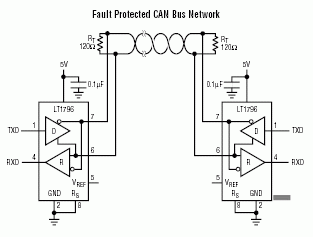

CAN
Controller Area Network (CAN) bus is a serial communication protocol with built-in error checking and retransmission. It is generally a two wire bus, but other transceivers with one wire or LSFT (Low Speed Fault Tolerant) are used.
The common high-speed two-wire CAN requires termination resistors at the end of the wires, typically 120 ohm.

Endpoint supports standard CAN and CAN-FD.
var canController = new CanController(EPM815.Can.Can2, 250_000);
// When 2 baudrates are needed
//var canController = new CanController(EPM815.Can.Can2, 250_000, 500_000);
canController.Enable();
// Send a message
var msg = new CanMessage(0x123, new byte[] { 11, 22, 33 });
canController.Write(msg);
Errors can be monitored as well
canController.EnableErrorEvent(CanError.ErrorTxTimeout | CanError.ErrorBusOff);
canController.ErrorReceived += (a, b) =>
{
uint error = (uint)b.Error;
if ((error & (uint)CanError.ErrorBusOff) == (uint)CanError.ErrorBusOff)
{
Console.WriteLine("Error bus off");
}
else
{
Console.WriteLine("Receving error: 0x" + error.ToString("x8"));
}
};
The library includes a message receive event but it is only for notifications and it does not include the message.
int messageCount = 0;
canController.MessageReceived += (a) =>
{
messageCount++;
Console.WriteLine("Receving message: " + messageCount);
};
Receiving messages can be handled in a loop.
while (true)
{
if (canController.MessagesToRead > 0)
{
var msgRead = canController.Read();
if (msgRead != null)
{
Console.WriteLine("ID: " + msgRead.ArbitrationId.ToString("x8"));
Console.WriteLine("Ext: " + msgRead.ExtendedFrameFormat);
Console.WriteLine("Remote: " + msgRead.RemoteTransmissionRequest);
}
}
Thread.Sleep(2);
}
Filter
CAN messages can overwhelm the system with traffic. Filters can be used so only desired messages are received. It is a good practice to set the filters before enabling the system.
The first argument of the filter is the ArbID we are looking for. The second argument is the mask of what bits we are interested in. A 0x03 for mask means we are only interested in checking the low 2 bits. The last argument is to invert the entire filter from a messages to receive to a filter to receive everything except what is in the filter.
canController.EnableFilter(new uint[] { 0x123 }, new uint[] { 0x000007FF }, true);